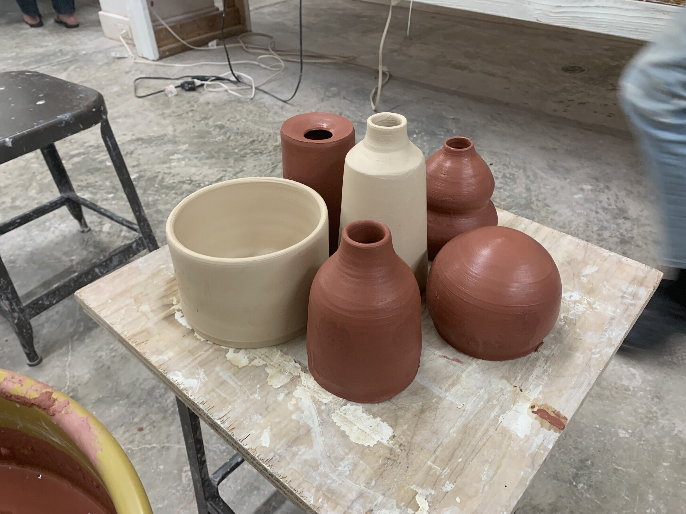

I'm a ceramic artist and a forever student. My work is rooted in wheel-thrown techniques, with some hand building mixed in, mostly using stoneware clay. I'm less interested in mastering one fixed style than in staying curious: every piece is a chance to learn something new and fold it back into the work.
My path to clay started at SUNY Geneseo, where I minored in Art Studio, but life took me elsewhere for a while. It wasn't until I moved to the Philadelphia suburbs about five years ago that I found my way back to the wheel, and this time I never left it. Since then, ceramics has become a steady practice of refinement, experimentation, and figuring out what I actually want to say with my hands.